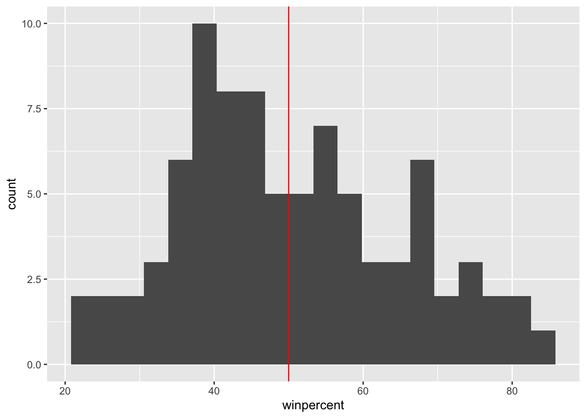
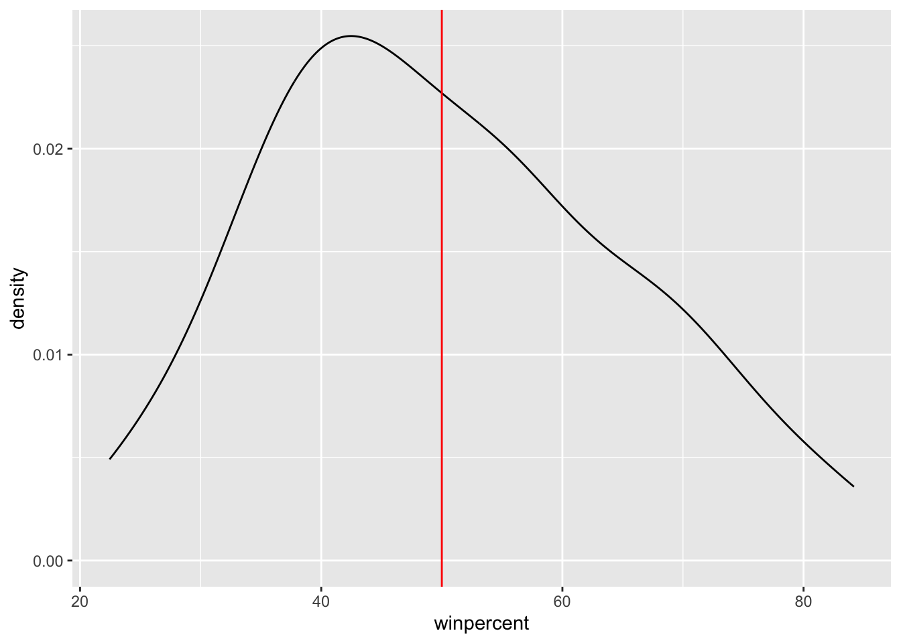
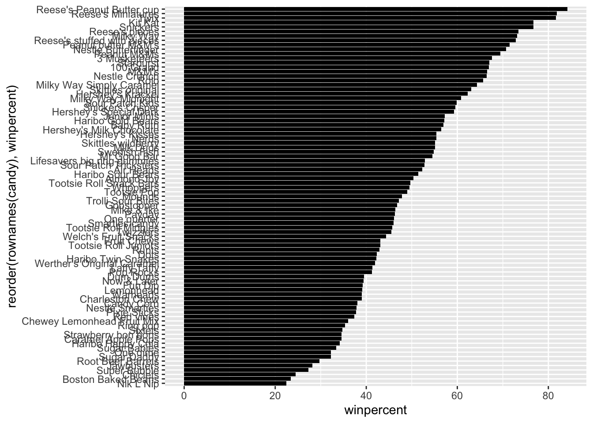
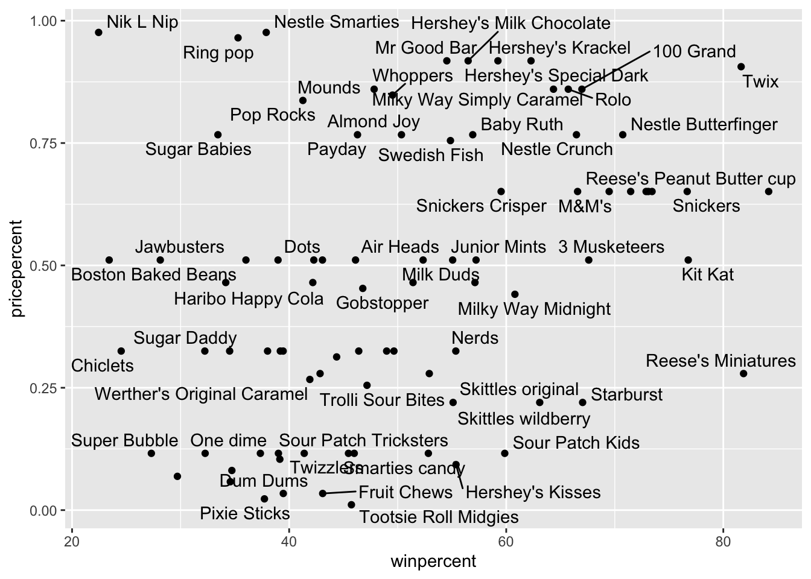
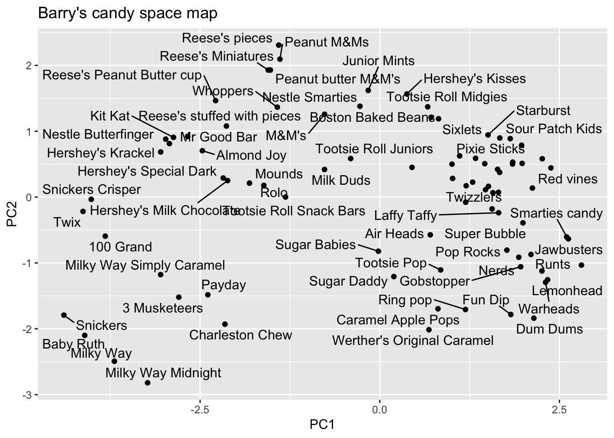

library(readr)
library(ggplot2)
library(tidyverse)Class 10: Halloween Mini Project
Libraries
Importing candy data
candy <- read.csv("candy-data.txt", row.names = 1)
head(candy) chocolate fruity caramel peanutyalmondy nougat crispedricewafer
100 Grand 1 0 1 0 0 1
3 Musketeers 1 0 0 0 1 0
One dime 0 0 0 0 0 0
One quarter 0 0 0 0 0 0
Air Heads 0 1 0 0 0 0
Almond Joy 1 0 0 1 0 0
hard bar pluribus sugarpercent pricepercent winpercent
100 Grand 0 1 0 0.732 0.860 66.97173
3 Musketeers 0 1 0 0.604 0.511 67.60294
One dime 0 0 0 0.011 0.116 32.26109
One quarter 0 0 0 0.011 0.511 46.11650
Air Heads 0 0 0 0.906 0.511 52.34146
Almond Joy 0 1 0 0.465 0.767 50.34755flextable::flextable(head(candy))chocolate | fruity | caramel | peanutyalmondy | nougat | crispedricewafer | hard | bar | pluribus | sugarpercent | pricepercent | winpercent |
|---|---|---|---|---|---|---|---|---|---|---|---|
1 | 0 | 1 | 0 | 0 | 1 | 0 | 1 | 0 | 0.732 | 0.860 | 66.97173 |
1 | 0 | 0 | 0 | 1 | 0 | 0 | 1 | 0 | 0.604 | 0.511 | 67.60294 |
0 | 0 | 0 | 0 | 0 | 0 | 0 | 0 | 0 | 0.011 | 0.116 | 32.26109 |
0 | 0 | 0 | 0 | 0 | 0 | 0 | 0 | 0 | 0.011 | 0.511 | 46.11650 |
0 | 1 | 0 | 0 | 0 | 0 | 0 | 0 | 0 | 0.906 | 0.511 | 52.34146 |
1 | 0 | 0 | 1 | 0 | 0 | 0 | 1 | 0 | 0.465 | 0.767 | 50.34755 |
q1: how many different candy types are in this dataset?
nrow(candy)[1] 85q2: how many fruity candy types are in the dataset
sum(candy$fruity)[1] 38Section 2: what is your favorite candy?
q3. What is your favorite candy in the dataset and what is it’s winpercent value?
candy["Laffy Taffy", ]$winpercent[1] 41.38956Q4. What is the winpercent value for “Kit Kat”?
candy["Kit Kat", ]$winpercent[1] 76.7686Q5. What is the winpercent value for “Tootsie Roll Snack Bars”?
candy["Tootsie Roll Snack Bars", ]$winpercent[1] 49.6535library("skimr")
# skim() function in the skimr package that can help give you a quick overview of a given dataset
skim(candy)| Name | candy |
| Number of rows | 85 |
| Number of columns | 12 |
| _______________________ | |
| Column type frequency: | |
| numeric | 12 |
| ________________________ | |
| Group variables | None |
Variable type: numeric
| skim_variable | n_missing | complete_rate | mean | sd | p0 | p25 | p50 | p75 | p100 | hist |
|---|---|---|---|---|---|---|---|---|---|---|
| chocolate | 0 | 1 | 0.44 | 0.50 | 0.00 | 0.00 | 0.00 | 1.00 | 1.00 | ▇▁▁▁▆ |
| fruity | 0 | 1 | 0.45 | 0.50 | 0.00 | 0.00 | 0.00 | 1.00 | 1.00 | ▇▁▁▁▆ |
| caramel | 0 | 1 | 0.16 | 0.37 | 0.00 | 0.00 | 0.00 | 0.00 | 1.00 | ▇▁▁▁▂ |
| peanutyalmondy | 0 | 1 | 0.16 | 0.37 | 0.00 | 0.00 | 0.00 | 0.00 | 1.00 | ▇▁▁▁▂ |
| nougat | 0 | 1 | 0.08 | 0.28 | 0.00 | 0.00 | 0.00 | 0.00 | 1.00 | ▇▁▁▁▁ |
| crispedricewafer | 0 | 1 | 0.08 | 0.28 | 0.00 | 0.00 | 0.00 | 0.00 | 1.00 | ▇▁▁▁▁ |
| hard | 0 | 1 | 0.18 | 0.38 | 0.00 | 0.00 | 0.00 | 0.00 | 1.00 | ▇▁▁▁▂ |
| bar | 0 | 1 | 0.25 | 0.43 | 0.00 | 0.00 | 0.00 | 0.00 | 1.00 | ▇▁▁▁▂ |
| pluribus | 0 | 1 | 0.52 | 0.50 | 0.00 | 0.00 | 1.00 | 1.00 | 1.00 | ▇▁▁▁▇ |
| sugarpercent | 0 | 1 | 0.48 | 0.28 | 0.01 | 0.22 | 0.47 | 0.73 | 0.99 | ▇▇▇▇▆ |
| pricepercent | 0 | 1 | 0.47 | 0.29 | 0.01 | 0.26 | 0.47 | 0.65 | 0.98 | ▇▇▇▇▆ |
| winpercent | 0 | 1 | 50.32 | 14.71 | 22.45 | 39.14 | 47.83 | 59.86 | 84.18 | ▃▇▆▅▂ |
Q6. Is there any variable/column that looks to be on a different scale to the majority of the other columns in the dataset?
winpercent looks like it is on a 0-100% scale whereas the other columns are 0-1.
Q7. What do you think a zero and one represent for the candy$chocolate column?
They are representing conditionals. TRUE is 1 and FALSE is 0.
A good place to start any exploratory analysis is with a histogram. You can do this most easily with the base R function hist(). Alternatively, you can use ggplot() with geom_hist(). Either works well in this case and (as always) its your choice.
Q8. Plot a histogram of winpercent values
ggplot(candy, aes(x=winpercent)) +
geom_histogram(bins=20) +
geom_vline(xintercept = 50, color="red")
Q9. Is the distribution of winpercent values symmetrical?
It’s not perfectly symmetrical, let’s try a density plot. As you can see it is skewed to the left a bit.
ggplot(candy, aes(x=winpercent)) +
geom_density(bins=20) +
geom_vline(xintercept = 50, color="red")Warning in geom_density(bins = 20): Ignoring unknown parameters: `bins`
Q10. Is the center of the distribution above or below 50%?
Although the mean is above 50 (slightly at 50.3 %) due to outliers, the center of the distribution (median) is below 50% at 47.82%
win <- candy$winpercent
summary(win) Min. 1st Qu. Median Mean 3rd Qu. Max.
22.45 39.14 47.83 50.32 59.86 84.18 Q11. On average is chocolate candy higher or lower ranked than fruit candy?
Chocolate candy is ranked higher than fruit candy on average at a win percent of 60.02% for chocolate compared to 44.12% of fruity candy
# 1. Find all chocolate candy in the dataset
# 2. Extract their winpercent values
# 3. Find the mean of the values
chocolate <- candy |>
filter(chocolate == 1) |>
summary(winpercent)
# Mean :60.92
fruity <- candy |>
filter(fruity == 1) |>
summary(winpercent)
# Mean :44.12
# Alternative:
# 1. Find all chocolate candy in the dataset
choc.inds <- as.logical(candy$chocolate)
choc.candy <- candy[choc.inds, ]
# 2. Extract their winpercent values
choc.win <- choc.candy$winpercent
# 3. Find the mean of the values
mean(choc.win)[1] 60.92153# 1. Find all fruity candy in the dataset
fruity.inds <- as.logical(candy$fruity)
fruity.candy <- candy[fruity.inds, ]
# 2. Extract their winpercent values
fruity.win <- fruity.candy$winpercent
# 3. Find the mean of the values
mean(fruity.win)[1] 44.11974Q12. Is this difference statistically significant?
Yes the answer is statistically significant, so chocolate candy is ranked higher than fruity candy, suggested here by the pvalue of 2.871e-08
t.test(choc.win, fruity.win)
Welch Two Sample t-test
data: choc.win and fruity.win
t = 6.2582, df = 68.882, p-value = 2.871e-08
alternative hypothesis: true difference in means is not equal to 0
95 percent confidence interval:
11.44563 22.15795
sample estimates:
mean of x mean of y
60.92153 44.11974 3. Overall Candy Rankings
Q13. What are the five least liked candy types in this set?
# with base R
head(candy[order(candy$winpercent),], n=5) chocolate fruity caramel peanutyalmondy nougat
Nik L Nip 0 1 0 0 0
Boston Baked Beans 0 0 0 1 0
Chiclets 0 1 0 0 0
Super Bubble 0 1 0 0 0
Jawbusters 0 1 0 0 0
crispedricewafer hard bar pluribus sugarpercent pricepercent
Nik L Nip 0 0 0 1 0.197 0.976
Boston Baked Beans 0 0 0 1 0.313 0.511
Chiclets 0 0 0 1 0.046 0.325
Super Bubble 0 0 0 0 0.162 0.116
Jawbusters 0 1 0 1 0.093 0.511
winpercent
Nik L Nip 22.44534
Boston Baked Beans 23.41782
Chiclets 24.52499
Super Bubble 27.30386
Jawbusters 28.12744# with dplyr
candy |>
arrange(winpercent) |>
head(5) chocolate fruity caramel peanutyalmondy nougat
Nik L Nip 0 1 0 0 0
Boston Baked Beans 0 0 0 1 0
Chiclets 0 1 0 0 0
Super Bubble 0 1 0 0 0
Jawbusters 0 1 0 0 0
crispedricewafer hard bar pluribus sugarpercent pricepercent
Nik L Nip 0 0 0 1 0.197 0.976
Boston Baked Beans 0 0 0 1 0.313 0.511
Chiclets 0 0 0 1 0.046 0.325
Super Bubble 0 0 0 0 0.162 0.116
Jawbusters 0 1 0 1 0.093 0.511
winpercent
Nik L Nip 22.44534
Boston Baked Beans 23.41782
Chiclets 24.52499
Super Bubble 27.30386
Jawbusters 28.12744Q14. What are the top 5 all time favorite candy types out of this set?
candy |>
arrange(-winpercent) |>
head(5) chocolate fruity caramel peanutyalmondy nougat
Reese's Peanut Butter cup 1 0 0 1 0
Reese's Miniatures 1 0 0 1 0
Twix 1 0 1 0 0
Kit Kat 1 0 0 0 0
Snickers 1 0 1 1 1
crispedricewafer hard bar pluribus sugarpercent
Reese's Peanut Butter cup 0 0 0 0 0.720
Reese's Miniatures 0 0 0 0 0.034
Twix 1 0 1 0 0.546
Kit Kat 1 0 1 0 0.313
Snickers 0 0 1 0 0.546
pricepercent winpercent
Reese's Peanut Butter cup 0.651 84.18029
Reese's Miniatures 0.279 81.86626
Twix 0.906 81.64291
Kit Kat 0.511 76.76860
Snickers 0.651 76.67378Q15. Make a first barplot of candy ranking based on winpercent values
ggplot(candy) +
aes(winpercent, rownames(candy)) +
geom_col()
x <- c(10,2,5,1)
order(x)[1] 4 2 3 1ord.ind <- order(candy$winpercent)
head(candy[ord.ind, ], 5) chocolate fruity caramel peanutyalmondy nougat
Nik L Nip 0 1 0 0 0
Boston Baked Beans 0 0 0 1 0
Chiclets 0 1 0 0 0
Super Bubble 0 1 0 0 0
Jawbusters 0 1 0 0 0
crispedricewafer hard bar pluribus sugarpercent pricepercent
Nik L Nip 0 0 0 1 0.197 0.976
Boston Baked Beans 0 0 0 1 0.313 0.511
Chiclets 0 0 0 1 0.046 0.325
Super Bubble 0 0 0 0 0.162 0.116
Jawbusters 0 1 0 1 0.093 0.511
winpercent
Nik L Nip 22.44534
Boston Baked Beans 23.41782
Chiclets 24.52499
Super Bubble 27.30386
Jawbusters 28.12744Q16. This is quite ugly, use the reorder() function to get the bars sorted by winpercent?
ggplot(candy) +
aes(winpercent, reorder(rownames(candy), winpercent)) +
geom_col()
my_cols=rep("black", nrow(candy))
my_cols[as.logical(candy$chocolate)] = "chocolate"
my_cols[as.logical(candy$bar)] = "brown"
my_cols[as.logical(candy$fruity)] = "pink"ggplot(candy) +
aes(winpercent, reorder(rownames(candy),winpercent)) +
geom_col(fill=my_cols) 
Q17. What is the worst ranked chocolate candy?
Sixlets are the worst ranked chocolate candy!
my_cols <- rep("black", nrow(candy))
candy$chocolate==1 [1] TRUE TRUE FALSE FALSE FALSE TRUE TRUE FALSE FALSE FALSE TRUE FALSE
[13] FALSE FALSE FALSE FALSE FALSE FALSE FALSE FALSE FALSE FALSE TRUE TRUE
[25] TRUE TRUE FALSE TRUE TRUE FALSE FALSE FALSE TRUE TRUE FALSE TRUE
[37] TRUE TRUE TRUE TRUE TRUE FALSE TRUE TRUE FALSE FALSE FALSE TRUE
[49] FALSE FALSE FALSE TRUE TRUE TRUE TRUE FALSE TRUE FALSE FALSE TRUE
[61] FALSE FALSE TRUE FALSE TRUE TRUE FALSE FALSE FALSE FALSE FALSE FALSE
[73] FALSE FALSE TRUE TRUE TRUE TRUE FALSE TRUE FALSE FALSE FALSE FALSE
[85] TRUEmy_cols [1] "black" "black" "black" "black" "black" "black" "black" "black" "black"
[10] "black" "black" "black" "black" "black" "black" "black" "black" "black"
[19] "black" "black" "black" "black" "black" "black" "black" "black" "black"
[28] "black" "black" "black" "black" "black" "black" "black" "black" "black"
[37] "black" "black" "black" "black" "black" "black" "black" "black" "black"
[46] "black" "black" "black" "black" "black" "black" "black" "black" "black"
[55] "black" "black" "black" "black" "black" "black" "black" "black" "black"
[64] "black" "black" "black" "black" "black" "black" "black" "black" "black"
[73] "black" "black" "black" "black" "black" "black" "black" "black" "black"
[82] "black" "black" "black" "black"ggplot(candy) +
aes(winpercent, reorder(rownames(candy),winpercent)) +
geom_col(fill=my_cols) 
Q18. What is the best ranked fruity candy?
Starburst is the best ranked fruity candy!
Section 4
Winpercent v PricePercent
Q19. Which candy type is the highest ranked in terms of winpercent for the least money - i.e. offers the most bang for your buck?
The fruity candies offer more band for your buck, with Starburst seeming to be the highest ranked for best cost, reeses miniatures may contend with it too, but it does have a slightly higher price percent.
library(ggrepel)
ggplot(candy) +
aes(winpercent, pricepercent, label=rownames(candy)) +
geom_point(col=my_cols) +
geom_text_repel(col=my_cols)Warning: ggrepel: 29 unlabeled data points (too many overlaps). Consider
increasing max.overlaps
Q20. What are the top 5 most expensive candy types in the dataset and of these which is the least popular?
ord <- order(candy$pricepercent, decreasing = TRUE)
head( candy[ord,c(11,12)], n=5 ) pricepercent winpercent
Nik L Nip 0.976 22.44534
Nestle Smarties 0.976 37.88719
Ring pop 0.965 35.29076
Hershey's Krackel 0.918 62.28448
Hershey's Milk Chocolate 0.918 56.49050Correlation structure
Q22. Examining this plot what two variables are anti-correlated (i.e. have minus values)?
fruity and chocolate are anti-correlated, also pluribus and bar but less so than fruity and chocolate
cij <- cor(candy) # takes all cols in dataset, so an nxn correlation matrixlibrary(corrplot)corrplot 0.95 loadedcorrplot(cij)
Q23. Similarly, what two variables are most positively correlated?
Aside from the 1:1 match, when items are paired against themselves, chocolate and winpercent are most positively correlated.
6. Principal Component Analysis
The main function in base R for this prcomp() remember it has a scale parameter you basically always want to use; scale=TRUE
pca <- prcomp(candy, scale=TRUE)
summary(pca)Importance of components:
PC1 PC2 PC3 PC4 PC5 PC6 PC7
Standard deviation 2.0788 1.1378 1.1092 1.07533 0.9518 0.81923 0.81530
Proportion of Variance 0.3601 0.1079 0.1025 0.09636 0.0755 0.05593 0.05539
Cumulative Proportion 0.3601 0.4680 0.5705 0.66688 0.7424 0.79830 0.85369
PC8 PC9 PC10 PC11 PC12
Standard deviation 0.74530 0.67824 0.62349 0.43974 0.39760
Proportion of Variance 0.04629 0.03833 0.03239 0.01611 0.01317
Cumulative Proportion 0.89998 0.93832 0.97071 0.98683 1.00000Let’s first look at our first main result figure - the “PC Plot” or PC1 v PC2 plot
ggplot(pca$x) + # shows where candies lie
aes(PC1, PC2, label=rownames(pca$x)) +
geom_point(col=my_cols) +
geom_text_repel(col=my_cols) +
labs(title = "Barry's candy space map")Warning: ggrepel: 24 unlabeled data points (too many overlaps). Consider
increasing max.overlaps
Don’t forget about your variable loadings – how the original variables contribute to your new PCs….
Q24. What original variables are picked up strongly by PC1 in the positive direction? Do these make sense to you?
Fruity, hard, and pluribus are most strongly picked up by PC1 in the positive direction. This makes sense because most fruity candy does seem to be hard, and because it is cheaper comes in multiples more than chocolate candy.
ggplot(pca$rotation) +
aes(PC1, rownames(pca$rotation)) +
geom_col()